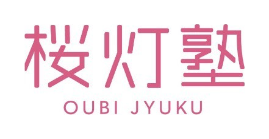
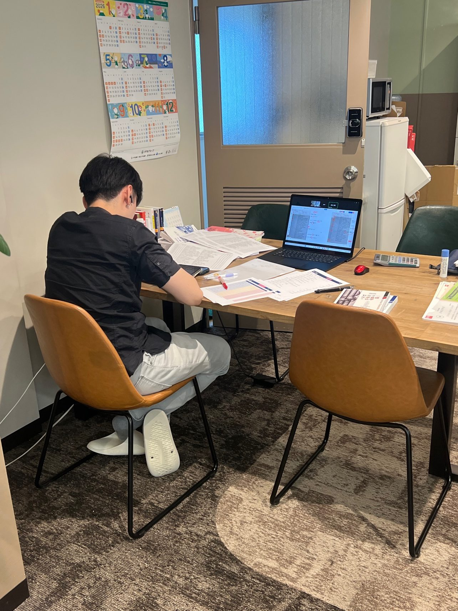
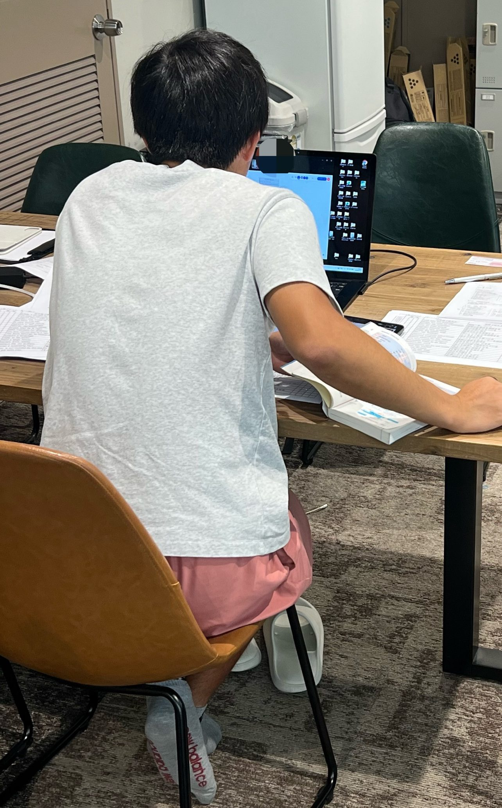

全国どこからでも、天王寺の教室とご自宅がつながる個別指導。教室の雰囲気のままご自宅で授業を実施できるので、移動時間ゼロ即教室を実現。塾長や他の講師もあなたの授業をのぞきますので、緊張感をもって授業できます。
オンライン自習室とLINE質問制度で、授業のない日も支えます。

大阪公立大学を目指す全国の受験生へ
桜灯塾ONLINE
2027年 新サービススタート
11月 無料相談・12月 体験授業 受付中
大阪公立大学の現役医学部生講師が30名以上在籍し、全員が指導しています（医学部医学科28名、うち大阪公立大学医学部24名。推薦・総合型選抜の合格者6名）。
合格者へのヒアリングを重ねた入試情報と、合格から正確に逆算したカリキュラムを組み、あなたの毎日の勉強スケジュールに落とし込みます。
桜灯塾ONLINEの授業は、天王寺の教室から配信します。講師の自宅やオンライン専用の部屋からではなく本物の教室から届ける形は、オンライン形態の塾では他にはないのではないでしょうか。
そのメリットは、
① 教室の緊張感のまま受けられる。配信する講師の周りには、塾長や他の講師がいます。見守られている環境から届けるので、家にいても空気が緩みません。
② 教室の教材や資料を、その場で使える。合格者のデータや教材がそろった教室だから、質問に応じて資料を見せながら進められます。
③ 通塾と地続きの指導になる。オンライン専用の別メニューではなく、通塾生と同じ教室・同じ講師陣の指導です。
月1回のスクーリングでは、その教室に来て受けることもできます。
計画立案・進捗管理・勉強実践・合格者常識の伝授をひとまとめにした「大阪公立大学合格オリジナルマネジメント」は桜灯塾ONLINEでも行います。教室から配信するから、対面と同じクオリティのカリキュラムが実現できます。
合格計画は塾長が設計し、進捗管理は講師陣が担当、進み具合は毎週の授業で確認します。
授業のない日は、オンライン自習室とLINE質問制度（高校3年生・既卒生）で支えます。
桜灯塾ONLINEの授業は、通塾と同じ指導を、移動時間ゼロであなたに届けます。


授業はすべて、天王寺の教室から配信しています
指導にあたるのは、大阪公立大学の現役学生を中心とする講師陣です。全員が実際に指導にあたるメンバーです。
医学部生講師が30名以上。そのうち医学部医学科の学生が28名で、多くが大阪公立大学の現役学生です。学校推薦型・総合型選抜の合格者も6名在籍しています。
計画の設計は塾長が担い、進捗の管理は講師陣が担います。塾長と講師陣は互いを尊重し合うチームで、一人ひとりの受験を支えます。
オンライン自習室の在室と、LINE質問の受付を担当します。質問はチューターが受け付け、内容に合った担当講師へ振り分けます。
天王寺の教室から、ビデオ通話で授業を配信します。
高3・既卒生は講師1人に生徒2人、高1・高2は講師1人に生徒3人で指導します。
1回120分の授業です。平日17:00–19:00／19:15–21:15と、土曜の枠から選べます。
平日18:15–21:15に開室します（月謝に含まれます）。授業と同じビデオ通話で入室します。チューターが在室し、確認テストと進捗管理を行います（チューターによる確認テスト、進捗管理のサポートは当日授業がある生徒のみ。）。
天王寺の教室で行います（オンライン参加も可）。大阪公立大学のオープンキャンパス案内も行います。
長期休みも、通常の時間割で進みます。
課題は、その週の計画に沿って講師が決めます。解いている最中を講師が見ていて、詰まったらその場で指導します。終わりに、詰まったポイントと次の一手を記録し、次の授業と計画に反映します。
授業とオンライン自習室はビデオ通話でつながります。パソコンやタブレットなどの機器と、安定したインターネット環境をご用意ください。
授業のない日も、公式LINEで質問できます。月謝に含まれます。
受付は公式LINEのみです。チューターが受け付け、担当講師に振り分けます。
計画の設計は塾長が担い、進捗の管理は講師陣が担います
医学部生講師30名以上が、実際に指導にあたります
塾長・講師・チューターのチームであなたと一緒に戦います
計画を立てて終わりじゃない、問題演習まで踏み込む、伴走型の指導です
月1回のスクーリングと、大阪公立大学のオープンキャンパス案内があります
学年に合わせた編成です。高1・高2は1対3、受験学年の高3・既卒は1対2に絞ります
大阪公立大学を目指す全国の受験生へ
桜灯塾ONLINE
2027年 新サービススタート
11月 無料相談・12月 体験授業 受付中
| 対象・コース | 内容 | 料金（税込） |
|---|---|---|
| 高3・既卒生（講師1人対生徒2人） | 週2回（1回120分） | 118,000円 |
| 高3・既卒生（講師1人対生徒2人） | 週3回（1回120分） | 158,000円 |
| 高3・既卒生（講師1人対生徒2人） | 週4回（1回120分） | 198,000円 |
| 高3・既卒生（講師1人対生徒2人） | 週5回（1回120分） | 238,000円 |
| 高1・高2（講師1人対生徒3人） | 週2回（1回120分） | 85,800円 |
| マンツーマン（学生講師）高3・既卒生 | 週1回（1回120分） | 70,400円 |
| マンツーマン（学生講師）高3・既卒生 | 週2回（1回120分） | 140,800円 |
| マンツーマン（学生講師）高1・高2 | 週1回（1回120分） | 61,600円 |
| マンツーマン（学生講師）高1・高2 | 週2回（1回120分） | 123,200円 |
| 入会金 | — | 27,500円 |
| 追加授業（マンツーマン120分） | 1回 | 16,500円 |
| 体験授業 | 初回（120分） | 無料 |
| 体験授業 | 有料体験3回（1回120分） | 16,500円 |
すべて税込です。教材費は実費のみ。オンライン自習室と、LINE質問制度（高3・既卒生）は月謝に含まれます。マンツーマン（学生講師）の月額は、1時間あたり高3・既卒生 8,800円／高1・高2 7,700円を、1回2時間・月4回（週1回）／月8回（週2回）で計算しています。「費用がかかっても、自分のためだけに見てほしい」という要望に応えるコースです。
A. 桜灯塾ONLINEは2027年1月スタートです。11月は無料相談、12月は体験授業を受け付けています。
A. 全国どこからでも受講できます。スクーリングはオンライン参加も可能です。
A. 高3・既卒生は、公式LINEで1日1問まで質問できます（答えではなくヒントをお返しする形です）。
A. 季節講習は行いません。長期休みも通常の時間割です。
A. いいえ、質問受けだけの授業ではありません。桜灯塾ONLINEの授業は演習型で、自習とは3つの点が違います。
1. 課題は、その週の計画に沿って講師が決めます。自分でやることを決める自習とは、ここが違います。
2. 問題を解いている最中を講師が見ていて、手が止まったり詰まったりしたら、その場で指導します。
3. 授業の終わりに、詰まったポイントと次の一手を記録し、次の授業と計画に反映します。
講義を聞く形式の授業ではありません。合うかどうかは、体験授業で確かめてください。
A. 授業中に通信が途切れた場合は、復旧を待って授業を続けるか、残りの時間を別の日程に振り替えます。教室側の機器や回線の不具合で授業が成立しなかった分は、全て振り替えの対象です。ご自宅側の接続環境による場合も、まずは教室にご連絡ください。状況を確認して対応を決めます。
A. 模試の成績をもとに、塾長が保護者面談を行います。必要があれば、担当講師も同席します。学習の進め方や進路のご相談は、いつでも公式LINEで受け付けています。
A. 通い放題コースは天王寺教室への通塾専用で、桜灯塾ONLINEにはありません。ONLINEの授業は、週2回から週5回まで（1回120分）の回数制です。
A. 退会は、退会希望月の前月末までに、公式LINEまたは教室へお申し出ください。授業料は月単位でのお支払いで、日割り計算は行いません。入会金およびすでにお支払いいただいた授業料の返金はできません。教材費は実費のみをいただいており、未使用分の教材がある場合は精算します。
A. まず無料相談（11月に受け付けています）で、現在の成績と志望学部をうかがいます。そのうえで体験授業（12月・初回無料、1回120分）を受けていただき、2027年1月から指導をスタートします。
桜灯塾ONLINEの無料相談のご案内も、公式LINEでお送りしています。
大阪公立大学を目指す全国の受験生へ
桜灯塾ONLINE
2027年 新サービススタート
11月 無料相談・12月 体験授業 受付中
お電話 06-6779-9507
大阪市天王寺区南河堀町9-43 ターミナル天王寺北口ビル201（JR天王寺駅北口 徒歩5分）